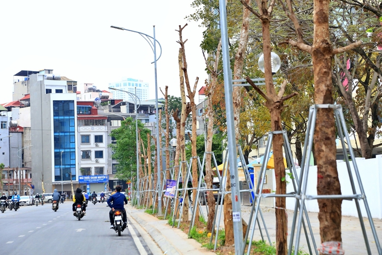
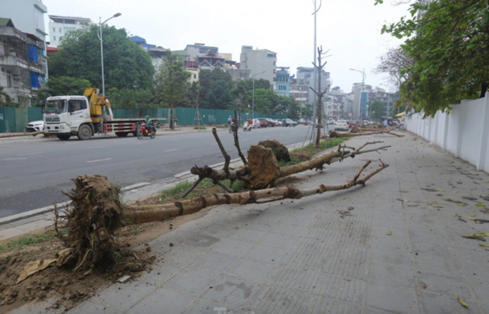
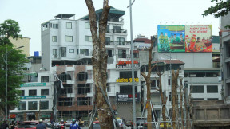

Cây xanh chết khô trên đường phố Hà Nội kéo dài tại đường Huỳnh Khúc
04/04/2023
Sáng 3/4, nhiều cây nhội chết khô có đường kính thân 20-25cm trên vỉa hè dọc đường Huỳnh Thúc Kháng kéo dài (Hà Nội) đã được nhổ lên.

Cây xanh chết khô trên đường phố Hà Nội kéo dài tại đường Huỳnh Khúc
Hạng mục cây xanh trên tuyến đường này có trị giá khoảng 2,5 tỷ đồng, do nhà thầu thi công là liên danh Công ty Đường bộ Phú Thọ và Công ty CP Đầu tư DCC Hà Nội thực hiện. Trước mắt, có vài chục cây được xác định đã bị chết.

Cây xanh chết khô trên đường phố Hà Nội kéo dài tại đường Huỳnh Khúc
Nguyên nhân khiến cây xanh chết khô hoặc có dấu hiệu sinh trưởng thấp được những người có trách nhiệm cho rằng “do thổ nhưỡng bị thay đổi đột ngột”.
Đường Huỳnh Thúc Kháng kéo dài có chiều dài khoảng 1,3km, vừa được thông xe vào ngày 17/1, có tổng mức đầu tư hơn 340 tỷ đồng do quận Đống Đa làm chủ đầu tư. Hàng cây xanh 2 bên đường với số lượng 264 cây được đầu tư đồng bộ cùng các hạng mục khác của con đường.
Tuy nhiên, đã nhiều tháng trôi qua, hàng cây không lên xanh mà bị khô héo. Nhiều cây chết đã lâu nên lớp vỏ bị bong tróc, gây mất cảnh quan đô thị và tiềm ẩn nguy cơ gãy, đổ, đe dọa người tham gia giao thông.
Còn nhớ, vào năm 2020, sau gần 3 năm trồng, những cây phong trên đường Trần Duy Hưng - Nguyễn Chí Thanh, Hà Nội cũng rơi vào tình trạng trơ trụi lá, nhiều cây bị chết khô. Tuyến đường này vốn được kỳ vọng sẽ trở thành một trong những con đường đẹp, lãng mạn nhất Thủ đô lúc bấy giờ…
Nhìn những cây nhội bị đốn hạ trên đường Huỳnh Thúc Kháng để chuẩn bị thay thế cây mới, nhiều người không khỏi xót xa. Dù lý do được đưa ra là “thổ nhưỡng thay đổi đột ngột” để lý giải cho hiện tượng cây chết, song cũng không loại trừ những yếu tố khác.
Hoặc là hàng cây đã không được trồng, chăm sóc một cách bài bản, hoặc là cây không phù hợp với điều kiện thổ nhưỡng và khí hậu tại Hà Nội nên không phát triển được. Liệu trước khi trồng, những đơn vị liên quan đã có nghiên cứu kỹ lưỡng?
Với hàng cây trên đường Huỳnh Thúc Kháng, nhiều người cũng tự hỏi: Vì sao cứ phải trồng cây to như thế? Vì sao nhiều cây không còn rễ cọc, rễ cái, còn nguyên vải bọc ôm bầu rễ mà vẫn được vô tư vùi xuống đất? Vì sao không trồng cây nhỏ vừa ươm được vài tháng tuổi, chờ cây lớn để có bộ rễ ăn sâu vào lòng đất mà nhất thiết phải là cây to? Vì sao phải là cây nhội mà không phải là một loại cây khác phù hợp hơn với khí hậu Thủ đô, có giá thành rẻ hơn cây nhội rất nhiều?...
Cây xanh không chỉ là lá phổi của đô thị, mà còn có nhiều tác dụng trong tổng thể hệ sinh thái cảnh quan đô thị. Bởi thế, việc trồng cây gì, trồng thế nào không phải là việc đơn giản, muốn làm thế nào cũng được.
Ở đây chưa rõ loạt cây xanh trên đường Huỳnh Thúc Kháng kéo dài đã được nghiệm thu hay chưa và nếu cây chết thì nhà thầu có bỏ tiền túi ra trồng thay thế hay không. Nhưng rõ ràng đây là một sự lãng phí rất lớn. Nếu như đã nghiệm thu rồi, chính ngân sách sẽ phải bỏ tiền ra trồng lại và 2,5 tỷ đồng đâu phải là con số nhỏ? Đó chính là tiền thuế của dân.
Xét cho cùng thì việc trồng cây xanh cũng chỉ là việc nhỏ trong số các công việc tại một đô thị lớn. Nhưng những cái cây ấy đã được trồng thế nào, cách thức ra sao, có xứng đáng với những đồng tiền thuế người dân đã bỏ ra hay không lại là câu chuyện khác.
Và ít nhiều thì nó cũng khiến người ta liên tưởng đến những câu chuyện lớn hơn. Từ chuyện cái cây, có khi lại là những chuyện to gấp nhiều lần cái cây, như đã từng xảy ra.

Cây xanh chết khô trên đường phố Hà Nội kéo dài tại đường Huỳnh Khúc
Hoặc là hàng cây đã không được trồng, chăm sóc một cách bài bản, hoặc là cây không phù hợp với điều kiện thổ nhưỡng và khí hậu tại Hà Nội nên không phát triển được. Liệu trước khi trồng, những đơn vị liên quan đã có nghiên cứu kỹ lưỡng?
Với hàng cây trên đường Huỳnh Thúc Kháng, nhiều người cũng tự hỏi: Vì sao cứ phải trồng cây to như thế? Vì sao nhiều cây không còn rễ cọc, rễ cái, còn nguyên vải bọc ôm bầu rễ mà vẫn được vô tư vùi xuống đất? Vì sao không trồng cây nhỏ vừa ươm được vài tháng tuổi, chờ cây lớn để có bộ rễ ăn sâu vào lòng đất mà nhất thiết phải là cây to? Vì sao phải là cây nhội mà không phải là một loại cây khác phù hợp hơn với khí hậu Thủ đô, có giá thành rẻ hơn cây nhội rất nhiều?...
Cây xanh không chỉ là lá phổi của đô thị, mà còn có nhiều tác dụng trong tổng thể hệ sinh thái cảnh quan đô thị. Bởi thế, việc trồng cây gì, trồng thế nào không phải là việc đơn giản, muốn làm thế nào cũng được.
Ở đây chưa rõ loạt cây xanh trên đường Huỳnh Thúc Kháng kéo dài đã được nghiệm thu hay chưa và nếu cây chết thì nhà thầu có bỏ tiền túi ra trồng thay thế hay không. Nhưng rõ ràng đây là một sự lãng phí rất lớn. Nếu như đã nghiệm thu rồi, chính ngân sách sẽ phải bỏ tiền ra trồng lại và 2,5 tỷ đồng đâu phải là con số nhỏ? Đó chính là tiền thuế của dân.
Xét cho cùng thì việc trồng cây xanh cũng chỉ là việc nhỏ trong số các công việc tại một đô thị lớn. Nhưng những cái cây ấy đã được trồng thế nào, cách thức ra sao, có xứng đáng với những đồng tiền thuế người dân đã bỏ ra hay không lại là câu chuyện khác.
Và ít nhiều thì nó cũng khiến người ta liên tưởng đến những câu chuyện lớn hơn. Từ chuyện cái cây, có khi lại là những chuyện to gấp nhiều lần cái cây, như đã từng xảy ra.
TS. Phạm Quang Long
Phó chủ tịch Hiệp hội Khoa học hành chính Việt Nam